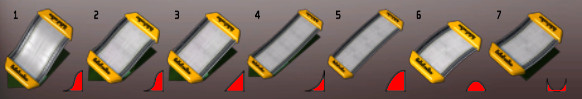
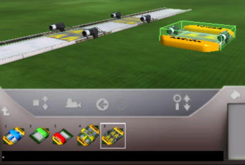
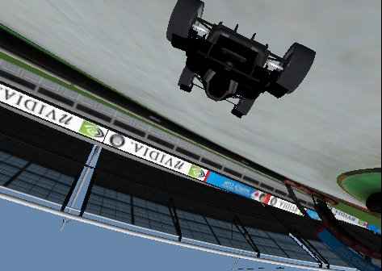

Bonjour, vous avez peut-être déjà joué aux nombreux circuits de Trackmania Nations et vous aimeriez bien faire de même...
Euh, mais c'est quoi Trackmania ? :euh:
Trackmania Nations est un jeu de course de voitures orienté arcade, basé également sur la recherche de la courbe parfaite (s'il y en a une !). Mais il est aussi connu pour être gratuit et réussi. On peut donc le télécharger sur le site officiel ou directement ici.
En effet, les bons développeurs de chez Nadeo ont intégré un éditeur de circuit à leur jeu. Et tous les circuits de Trackmania Nations ont été faits grâce à lui, même les circuits d'origine.
Alors préparez-vous à savoir faire des circuits du même niveau, voire même mieux, car vous n'avez pas tout vu...
En effet, nous verrons également comment changer de caméra, rajouter des effets.
Dans cette partie, nous nous familiariserons avec le jeu, tous ses modes et son interface de mapping. Ce sont les bases à connaître pour devenir un bon mappeur Trackmania. Si vous avez déjà fait un ou deux circuits, lisez toujours, vous louperiez des petits trucs utiles pour la suite. Trackmania dispose de plusieurs modes de jeu : en solo, sur le net, ou sur un même PC à plusieurs.
De cette façon, cela évite les longs temps de téléchargement avant de se connecter, et cela permet des changements de circuit très fréquents, environ une douzaine par heure.
Pour commencer, après avoir téléchargé le jeu, il vaut mieux affiner les réglages, de façon à dépasser amplement les 40 images par seconde requises pour que l'œil humain ne voit aucune saccade. Donc pour ceux qui ne s'y connaissent pas trop, je vais citer les paramètres qui influent considérablement sur la rapidité d'affichage du sublime jeu que peut être Trackmania Nations :
la résolution de l'écran ;
la qualité des shaders ;
la qualité des textures ;
le filtrage maximal ;
les ombres ;
l'anti-aliasing (anti-crénelage).
Pour pouvoir régler tout cela, il faut aller dans configuration, puis avancé. Deux derniers réglages sont cachés dans l'onglet « jeu », il s'agit de la qualité du ciel et des voitures.
Une fois le jeu lancé on arrive sur cet écran :
Pour jouer en solo, il faut cliquer sur :
Si vous voulez jouer contre un ou plusieurs adversaires sans pour autant avoir deux PC :
Le fonctionnement est très spécial : une première personne fait un temps dans un temps imparti. La deuxième doit battre ce temps. Le suivant essaie de battre à nouveau le record, avec le temps qui lui reste. Jusqu'à ce que les moins bons n'aient plus de temps.
Ou bien en réseau local :
Ou encore sur Internet :
Mais il y a une règle à respecter : aucune insulte.
Sur Internet, il y a un système de classement (ladder) qui est assez intéressant. Il fonctionne à partir de points (on commence à zéro), plus vous gagnez de courses contre des personnes mieux classées que vous, plus vous engrangez de points, mais vous ne pouvez pas en perdre. Cela a pour impact que les dix premiers mondiaux sont des très gros joueurs. Mais en réalité, ce ne sont pas eux qui ont le meilleur niveau. Inversement, ceux qui ont le meilleur niveau ne sont pas forcément très bien classés. Certains serveurs ne veulent pas participer à ce principe (dans leur description, le plus souvent ils inscrivent « no ladder »), afin de ne pas soutenir un esprit de compétition, c'est leur choix. Sinon, il existe principalement deux types de jeux sur Internet : le time attack et le « Par tour ». Dans le premier, on fait un peu ce que l'on veut, le principal reste de faire le meilleur temps. Dans le « Par tour », tout le monde part en même temps et l'on ne doit arriver que quelques dizaines de secondes après le premier, sinon votre course s'arrête et tout le monde repart en même temps. Donc si vous êtes sorti de route, vous devez attendre que le premier finisse.
Si vous cherchez à changer votre pseudo, y mettre des couleurs (on verra cela en annexe), ou peindre votre voiture, c'est dans Profil :
Pour créer ou modifier un circuit, il faut aller dans l'éditeur.
Après, cliquez sur « nouveau circuit ». Là il faut patienter un instant, le temps que le décor se charge... Mais avant de commencer à mapper, rappelons-nous bien les principes de Trackmania : le but est de finir le plus vite possible tout en passant par toutes les portes. Comme Trackmania est aussi multijoueur, il faut aussi se rappeler qu'il ne gère pas les collisions entre les véhicules. On peut gagner des médailles, il existe quatre récompenses : le bronze, l'argent, l'or et le record du circuit ! :waw:
En principe, si vous avez fait le circuit, c'est votre record qu'il faut dépasser pour détenir cette dernière.
Si vous voulez jouer le circuit que vous venez de faire, ou que vous avez téléchargé, il faut aller dans « Solo » puis « Parcourir les circuits ». Il s'affiche ceci à votre écran :
En jaune, cela représente le répertoire Challenges du jeu. À l'intérieur, vous y trouverez plusieurs dossiers qui contiennent tous les circuits. Pour y entrer, double-cliquez dessus. En rouge, ce bouton vous permet d'aller au répertoire parent. En bleu, ce bouton permet d'afficher tous les circuits ou de revenir au mode normal.
Maintenant, passons au plus important, l'interface de mapping. :)
Passons maintenant aux choses sérieuses, qui vont nous permettre de créer notre circuit dans sa quasi-totalité.
Après avoir créé votre circuit, vous tombez sur ça :
Eh oui ! Avec une interface aussi simple, on peut faire des circuits de dingue !
Donc, dans l'ordre sur le tableau de bord, de gauche à droite :
la flèche qui pointe vers la gauche permet de revenir au menu principal ;
la disquette permet de sauvegarder votre circuit, avec son futur nom ;
l'icône de voiture permet de jouer au circuit : une fois cliqué, il faut mettre son curseur sur l'endroit du circuit où l'on veut tester, orienter la voiture à l'aide du clic droit de la souris, puis lancer le départ avec clic gauche ;
le marteau permet d'accéder à une aide contextuelle rappelant les différents raccourcis clavier ;
le drapeau permet de valider votre circuit, c'est-à-dire prouver à Trackmania qu'il est faisable et lui permettre d'enregistrer le fameux record de l'auteur du circuit ;
le rond affiche les records à battre pour gagner les médailles, on ne peut les modifier qu'après avoir validé son circuit, et le record de la médaille d'or ne peut pas être plus dur que le record de l'auteur du circuit ;
la caméra permet de modifier toutes les vues « caméra » durant l'épreuve et de rajouter des effets intéressants !
le carré est utile pour connaître la hauteur d'un bloc, ou pour se mettre directement à sa hauteur, en cliquant sur ce carré puis sur le bloc concerné ;
le tractopelle permet de supprimer un bloc, mais ici on utilisera la touche « Suppr » ou « Del » de votre clavier ;
les flèches qui sont ici grisées annulent ou rétablissent l'action précédente ou suivante ;
les flèches haut et bas font un zoom ou dézoom de la caméra ;
enfin, le petit pot de peinture nous servira pour certains éléments du décor.
Mais comment fait-on le circuit ? :(
Chaque circuit est constitué de blocs élémentaires de route, qui sont mis côte à côte. Le curseur est utile puisque les blocs seront ajoutés à son emplacement. On peut donc bouger le curseur sur trois axes : x, y et z grâce à la molette de la souris ou avec les deux flèches juxtaposées au carré dans le tableau de bord. Mais on préfèrera la molette.
Les constructions arrivent... dans la partie suivante !
L'interface est une partie indispensable pour comprendre la suite, c'est vrai que ce n'est pas le plus intéressant, mais dans la prochaine partie, vous créerez votre première route ! :) Cela signifie que vous n'utiliserez plus votre voiture en tant que tondeuse à gazon.
Nous verrons tous les types de support qui peuvent servir à notre voiture pour rouler... >_ Cela implique que l'on ne va pas rouler uniquement sur de la route, mais aussi sur de l'herbe ou du décor.
Mais quelle différence entre l'herbe et la route à part l'aspect ? L'adhérence, pardi !
Les routes, c'est bien, mais avec quelques obstacles pour pimenter, c'est encore mieux ! Vous connaissez les blocs, à moins de ne pas du tout avoir joué à Trackmania, mais il faut quand même savoir où ils se trouvent dans l'interface.
Pour ce qui est de l'interface, je ne vous ai pas tout dit (heureusement, sinon on n'irait pas loin...) : les carrés jaunes avec des sortes de blocs de route en icône dessus sont en fait des dossiers ! Chacun d'eux comporte d'autres dossiers qui ensuite permettent d'accéder au vrai bloc de circuit qui eux sont sur fond gris contrairement au dossier. Pour rentrer dans un dossier, il suffit d'un seul clic. Rentrez donc dans le premier puis à nouveau dans le premier.
Alors apparaissent des virages ! On sélectionnera la première icône qui représente une ligne droite, puis on cliquera sur la pelouse à un endroit, et là :
Notre premier morceau de circuit ! :)
On teste sans plus tarder : on clique sur la voiture, puis on clique sur le morceau de circuit.
Ma voiture est mal orientée, comment faut-il faire ?
Pour éviter cela, il suffit de laisser le curseur sur le bloc de route créé, puis d'appuyer sur la touche « Entrée ». Si vous avez utilisé la première méthode, alors il faut utiliser le clic droit pour orienter la flèche dans le bon sens ; avec la deuxième méthode, il faut changer d'angle de vue avec les touches 4 et 8 du pavé numérique. Sinon, changez l'orientation de votre bloc à sa création en utilisant le clic droit de la souris. :)
:euh: Vous trouvez le circuit trop long à faire ? Eh bien sachez que les lignes droites peuvent être faites à la volée : en maintenant le clic gauche enfoncé, ça peut donner ça :
Vous remarquerez que les petits virages sont faits de blocs collés les uns aux autres dans deux directions perpendiculaires. Maintenant, si vous le désirez, amusez-vous à faire des virages plus larges. Pour revenir au dossier parent du menu en bas, il faut utiliser la flèche juste en bas à droite de l'icône de caméra.
Dans la partie qui suit, nous verrons les éléments indispensables à un circuit.
Votre premier circuit est fait, vous l'avez peut-être déjà sauvegardé (cliquez sur l'icône de la disquette si ce n'est pas déjà fait), et vous voudrez enregistrer votre meilleur temps... Mais Trackmania ne sait pas où sont le départ et les arrivées...
On peut tout de même se poser la question suivante :
Faudra-t-il que le joueur fasse plusieurs tours de circuits ou bien s'agit-il d'un sprint ?
En effet, dans le premier cas, il faut créer un multilaps à la place d'un départ et d'une arrivée. Pour ce faire, choisissez dans l'ordre la 1re, puis la 2e et enfin la 4e icône, pour finalement poser le multilaps sur le circuit, à l'endroit du départ et donc de l'arrivée (de façon à boucler la boucle). Le nombre de tours qu'il faudra accomplir se règle avant la validation du circuit dans les objectifs (petite icône en forme de rond).
Sinon pour un sprint normal, on met le départ avec la deuxième icône dans le même dossier que le multilaps, et l'arrivée ou les arrivées avec la troisième. Dans n'importe quel circuit dépassant la vingtaine de blocs, il faut mettre des checkpoint : ce sont des portes qui diront aux joueurs le temps qu'ils mettent, et qui les obligent à passer dessous.
Le checkpoint se trouve à la première icône et est représenté en bleu. Et le checkpoint s'oriente, car il est plus beau dans un sens que dans l'autre...
Désormais vous pouvez valider votre circuit avec l'icône du drapeau puis modifier les objectifs avec le rond à côté.
Pour vous entraîner un peu, faites deux versions de ce circuit : un avec un multilaps et un autre sans.
Des routes, c'est bien, mais c'est encore mieux s'il y a des montées et descentes avec virages inclinés. Voyons tout ça ensemble. ;)
Les montées sont dans le deuxième dossier jaune de l'interface de départ. Il existe bien évidemment plusieurs types de montées :

Les trois premières montées tiennent sur une case de la grille, comme les 6 et 7, alors que les montées 4 et 5 occupent deux cases de la grille chacune. Sur l'image ci-dessus, j'ai colorié en rouge la géométrie des montées.
Bien sûr, la géométrie ne compte pas pour du beurre : si vous mettez deux fois à la suite la pièce numéro 7, vous allez avoir une coupure visuellement décevante et pas très intéressante au niveau de la conduite... :lol:
Ne faites donc pas n'importe quoi non plus ! Mais toutefois certaines choses sont faisables :
J'ai écrit les dimensions de ce saut et les numéros des pièces utilisées. Seulement, je ne vous ai pas expliqué une des pièces utilisées, elle sera expliquée dans la partie suivante.
En attendant, voyons les routes inclinées et les virages inclinés. Pour ce faire, entrez dans le troisième dossier du début, puis dans le premier. (Voir l'image ci-dessous.) Ici, les blocs 1, 2, 3 ne prennent qu'une case sur la grille de la map, contrairement aux 4 et 5. À part le bloc 1 qui est la route inclinée, ces blocs permettent la transition entre la route horizontale et la route inclinée. Les blocs 6 et 7 permettent la transition entre une route plane et une route inclinée par un virage à angle droit. Et les blocs 8 et 9 font cette transition pendant un virage en S. Dans le 3e dossier résident les virages qui sont inclinés de chaque côté.
Dans le quatrième dossier, c'est un peu plus complexe, puisqu'il s'agit de faire la transition en passant d'une montée au plan incliné par un virage à angle droit, tout en montant ou descendant.
Maintenant, passons aux routes spéciales qui n'existent pas trop dans la réalité.
J'imagine que vos circuits sont intéressants mais ils le seraient encore un peu plus s'il ne fallait pas une longue ligne droite afin de prendre de la vitesse ! :D Heureusement, et j'espère que vous l'avez déjà vu dans les circuits du développeur Nadeo, il existe des boosters pour un maximum de vitesse en peu de temps ! Ces boosters existent de toutes les façons imaginables : inclinés, en montée, en descente, sur du plat, mais pas en virage heureusement ! Par la même occasion, on notera qu'il en est de même pour les checkpoints et tous les obstacles que l'on verra par la suite.
Les boosters sont obligatoirement orientés : on peut les orienter dans le sens contraire afin de ralentir, toutefois, il faut faire attention à ce que l'on ait assez de vitesse pour le passer.

Le booster se trouve toujours à côté du départ, du multilaps, de l'arrivée et du checkpoint. Il existe aussi des routes bien utiles, qui sont des virages spéciaux très intéressants : virages en S courts ou longs, bifurcation, tout pour faire notre bonheur.
Pour les obstacles je vous ai fait une petite image qui explique tout :
On voit toutes les sortes d'obstacles dans tous leurs états possibles. Certains n'existent que dans l'état normal et d'autres dans tous les états...
Le plus abusé reste le trou, qui est abominable après une toute petite monté, car inévitable à moins de les connaître par cœur, donc à éviter sinon... :colere: À moins que vous ne le mettiez après une descente auquel cas il reste visible et évitable. Les poteaux et le rétrécissement restent tout de même redoutables en sortie de virages serrés, surtout quand on met les trois d'un coup (bloc 4). Mais un trou peut servir d'obstacle intéressant, où il faut passer dedans : après un saut, faire en sorte d'atterrir dans un trou pour continuer la route peut être un élément d'un circuit.
Ce n'est pas très visible sur l'image, mais le bloc 7 consiste en un léger cassis provoquant une perte d'adhérence de la voiture. On imagine les possibilités. :diable: Tous les obstacles officiels ont été vus, alors passons aux excentricités de Trackmania Nations, qui sont nombreuses :
rouler sur un plan vertical (wall-ride) ;
sauter des tremplins ;
passer des tire-bouchons ;
passer des loopings ;
rouler dans l'herbe ;
rouler sur des boudins sans rambarde.
Pour rassembler le tout :
Pour commencer, on peut voir que j'ai mis un checkpoint après chaque étape.
Le circuit débute par un tire-bouchon. Celui-ci est vraiment simple à mettre en place, car il ne nécessite aucune transition, contrairement au plan incliné, et au looping. Mais il est en deux parties, des fois que l'on veuille faire des fantaisies. On notera qu'il faut de la vitesse pour ne pas s'arrêter et tomber en plein milieu. Les tire-bouchons se trouvent dans le dossier des tremplins qui est lui-même dans le dossier des routes.
Par la suite, on roule sur l'herbe, ici cela fait office d'échangeur si on veut passer sur l'autre voie. Pour que le conducteur ne soit pas perdu, je lui ferme toute liberté de sortir du circuit et d'essayer de couper par un endroit auquel on n'avait pas pensé et qui réduit le temps du circuit d'une minute, alors que ce n'est pas le but recherché.
Après viennent deux tremplins différents par leur inclinaison. Et donc le tremplin est assez utile pour faire une transition entre deux types de routes. La classe totale consiste à faire le saut et la réception sur deux tremplins : on saute d'un tremplin pour arriver sur un autre. Quand c'est bien calculé, la sensation est intense. :soleil: Mais n'hésitez pas à tester quand vous faites des trucs « foireux », sinon une déception vous attend à la validation de votre circuit. On retombe donc sur une sorte de route sans rambarde, où la sortie de circuit est sans appel. On construit tout ça de la même manière qu'une route : à la volée si possible.
Enfin, le fameux looping suivi du plan vertical. Ne voyez-vous pas des similitudes ? Eh oui ! Les loopings comportent certains éléments semblables aux plans verticaux. Par conséquent, cela nous facilite l'apprentissage et nous donne également plus de souplesse ! Ne vous rappelez-vous pas des rampes que l'on trouve dans les circuits experts ? Mais si ! Celles où l'on passe de l'une à l'autre par un grand saut ! On peut faire pareil. :)
Enfin quasiment, car on ne sait pas encore faire le décor (les flèches).
Ainsi, pour les loopings, il faut trois éléments :
les transitions (2) ;
les parties basses (2) ;
les parties hautes (2 ou 3 selon la vitesse à laquelle arrive la voiture).
Le bloc de transition se trouve dans le dossier 3 et est désigné par le numéro 1 sur le schéma comme dans le dossier. Pour le plan vertical, les transitions sont différentes, mais toujours dans le même dossier 3. Sur le bord des transitions on met les demis « U » que l'on utilisait pour les loopings. Parfois, si la vitesse est excessive, il faudra en joindre côte à côte plus de deux afin que la voiture ne fasse pas un vol plané. :D Pour que la voiture adhère sur le plan vertical, on est bien obligé de tourner. On met donc deux virages verticaux de taille adaptée au cas précis :
petite taille grand virage ;
petite taille petit virage ;
grande taille grand virage ;
...
Il y en a six au total et ils se trouvent dans le dossier 2. On le voit très peu, mais il est très facile de créer une vrille : faire plus de 270° avec un plan vertical. Cependant cela nécessite une vitesse élevée : plus de 300 à 400 km/h. o_O Si vous faites vos premiers plans verticaux, vous comprendrez la difficulté qu'ils procurent au conducteur pour être franchis. D'où la nécessité de prévenir, surtout dans un circuit long. Et vous savez quoi, c'est le sujet du prochain chapitre ! C'est simple et à la fois intéressant.
Ainsi les routes n'ont plus de secret pour vous, encore que certains mappeurs utilisent des éléments de décor pour créer toutes sortes de pièges ! :diable:
Les plus connus mais pourtant cachés dans l'interface de mapping de Trackmania Nations, leur utilisation peut s'avérer indispensable dans les circuits longs nécessitant d'apprendre par cœur le tracé pour négocier chaque virage et gagner un maximum de temps. :pirate: Ce sont les panneaux de signalisation.
Pour les placer, rien de très difficile : ils se trouvent dans le dossier 4 puis 1 depuis le répertoire racine. Enfin, cliquez sur le dernier bloc et placez-en quelques-uns.
Euh ! :euh: Je n'ai pas envie de faire de publicité pour Trackmania dans un circuit Trackmania, je veux plutôt des signes de prévention. Help ?
Vous vous souvenez sûrement du petit pot de peinture dont je vous ai parlé en début de tuto. Eh bien cliquez dessus. Les blocs des panneaux d'affichage deviennent apparents et bleus. Quand on passe le curseur au-dessus d'un panneau, il vire au rose violet. On clique. Et une boîte de dialogue apparaît. Cliquez sur la flèche gauche pour changer de dossier. Ensuite, sélectionnez un des noms et admirez ce sublime panneau. :soleil:
Voici la liste de tous les panneaux dans l'ordre de la boîte de dialogue :
C'en est fini pour les panneaux de signalisations. Vous voyez que c'était simple. Mais il en existe d'autres ! Regardez donc ça :
Ce sont des panneaux qui peuvent eux aussi être intéressants : ils se construisent comme une route. Un seul suffira pour indiquer la route (on le mettra avant un virage, ou un obstacle) ou pour un saut, on peut faire une longue ligne de panneaux indiquant où atterrir. Pour changer leur contenu, c'est pareil que les autres : pot de peinture, puis on clique sur le panneau. Si vous regardez attentivement le bloc 4 de l'image, vous pouvez voir un petit rectangle sur le côté. Eh oui, il y a un panneau sur le bord de la route !
Il n'en reste plus qu'une sorte que je vous réserve pour la suite... Car nous n'avons pas vu une décoration qui permet de créer ce panneau géant. N'oubliez donc pas d'utiliser des panneaux sur vos circuits : ça évite de recommencer à chaque piège que vous avez mis sinon, il y aura certains joueurs peu tolérants. :colere: Et puis ça fait professionnel.
Les circuits se ressemblent tous, surtout s'ils ne sont composés que de routes qui s'entrecroisent de partout. On va donc apprendre à les rendre hors du commun ! o_O Pour cela, rien de tel que quelques fantaisies. Comme d'habitude, je vous fais une super image qui montre tout d'un coup :
Alors pour commencer, imaginons que l'on supprime la déco. Mais il n'y a rien ! Si, un petit tremplin et une ligne d'arrivée. :honte: Comme quoi, un circuit peut totalement différer avec et sans la déco. Pour créer des espèces de boudins rouges, il faut mettre une certaine hauteur et créer une surface : c'est-à-dire que l'on déplace le curseur de façon à ce qu'un rectangle d'au moins 2*2 cases apparaisse. On remarque que les boudins doivent obligatoirement toucher la terre ferme. Sur ces boudins, on met deux panneaux géants qui claquent trop.
Ensuite, on met une structure métallique qui en sort en partie avec la pièce 1. La pièce 6 est intéressante pour mettre les panneaux que l'on avait découverts au début. Cela donne l'impression qu'ils sont solidement accrochés. Ici, je ne les ai pas mis pour que l'on puisse voir la pièce. Au-dessus, les pièces 5 et 2 font vraiment un effet spectaculaire. Les structures métalliques horizontales se créent comme une route. Les profils des blocs dans l'interface sont en rouge pour mieux les voir (vue de côté). Les blocs 1, 3 et 4 font de la figuration, mais ils peuvent servir de route. Tout comme les boudins rouges qui sont purement décoratifs ici, mais on peut faire ceci :
Quel intérêt ? D'abord, c'est hors du commun, ensuite on a une plus grande liberté dans la conduite : la route est plus large, donc les virages doivent être négociés avec plus de précision. Et surtout la route n'adhère pas autant que le vrai goudron gris. D'où une sensation hors du commun et une meilleure impression de vitesse. o_O
Tester, c'est l'adopter.
Surtout n'hésitez pas à mettre du décor avec des trucs qui clignotent de partout ! :D Non, sans trop abuser, cela peut être subtil et même faire la différence entre d'autres circuits, grâce à une déco jamais vue. (Je vous fais confiance.)
Sachez tout de même que le décor est d'une utilité capitale : il peut faire souffler votre PC. En effet, lorsque le PC doit afficher tout un circuit entier avec une quinzaine de loopings, rares sont ceux chez qui ça ne rame pas. La solution : rajouter du décor, c'est-à-dire couper votre circuit en plein de petits morceaux pour que le PC n'ait pas à calculer tout le circuit.
Pour savoir également des choses complémentaires très utiles, ou tout simplement s'y retrouver dans une interface. En d'autres termes : colorer son pseudo, savoir où chaque bloc se trouve dans l'arborescence, ne pas faire les erreurs de débutant, ou peindre sa voiture pour qu'elle soit unique au monde.
Cette annexe est un peu l'endroit où l'on parle le moins de la création des maps elles-mêmes, mais plutôt du jeu en général. Si aucun des sujets ne vous intéresse, vous pouvez sauter cette partie sans manquer un élément essentiel pour la suite.
Vous êtes sûrement allé jouer sur le net et vous avez vu des pseudos colorés avec parfois des formes bizarres et vous aimeriez faire de même ? Eh bien tonton OujA est là ! :D Les gars de Nadeo ont implémenté tout un tas de codes pour rendre votre pseudo unique.
Comment ça marche ?
Vous vous rappelez peut-être des codes couleur de Quake3 Arena ? Il fallait mettre « ^1 » pour le rouge juste avant un pseudo et ça faisait : OujA. Sauf que dans Q3 il n'y avait que 9 codes couleur. :( Mais on pouvait les combiner ! « ^1eXc ^2OujA » faisait : eXcOujA C'était génial et novateur pour l'époque.
Mais Trackmania Nations arrive et préparez-vous, car on peut également combiner les couleurs, élargir le texte, mettre une ombre, rétrécir, et colorer avec 163= 4096 couleurs différentes !
Les couleurs
Pour colorier OujA en n'importe quelles couleurs, il faut mettre le signe $ (dollar, à côté de l'accent circonflexe sur le clavier) suivi immédiatement du code RVB (rouge, vert, bleu) en hexadécimal, mais avec un seul chiffre par couleur : par exemple le vert c'est $0f0, le rouge $f00, le bleu $00f, le blanc $fff, le noir $000. (f=15) Mais on peut nuancer, puisqu'il y a 4096 couleurs différentes ($001, $002, $003, ..., $ffe, $fff). Ainsi le bleu ciel, c'est $99f. Et donc « $aafeXc $0f0OujA » fait eXcOujA
Les effets sur la fonte
Regardez ceci :
$w pour élargir (width).
$n pour rétrécir (narrow).
$i pour l'italique (italic).
$s pour l'ombre (shadow).
$m pour revenir à la normale, sauf pour les couleurs.
$g pour revenir à la couleur par défaut.
$z pour revenir à la normale, même pour les couleurs (annuler tout :p ).
Le $z ou $m est utile pour les noms composés.
Mon pseudo c'est « $$Cash$$ », comment l'écrire ? Ça marque seulement « $Cash$ ».
Il faut mettre deux « $ » à la place d'un, pour ce pseudo il faudra écrire « $$$$Cash$$$$ », et il apparaîtra « $$Cash$$ ». Pour ce pseudo, ça ne fait pas n'importe quoi, mais pour « $niark$ », ça fera : « iark ».
Voilà pour les textes et pseudos, mais pour les adeptes du multicolore, on est limité, du fait qu'un pseudo ne doit pas dépasser 20 caractères ! Et c'est vite fait avec deux colorations qui en prennent 8, un élargissement 2, et le pseudo 10. Mais, pour se faire repérer, il vaut mieux colorer son pseudo, sinon on se fond dans la masse. :ninja:
Ne pas mettre de checkpoint juste avant un looping ou un saut dans Trackmania United, car quand la personne recommence du checkpoint, elle n'arrive pas à passer, car elle n'a plus assez d'élan.
Testez vos circuits, testez et retestez ! Il faut que votre circuit puisse être fini sans toucher le moindre rebord, pour que ça soit un maximum fluide : pas de pire coup de frein à donner, etc.
Utilisez des boosters pour vivifier votre circuit.
Faites des minimaps : une map ne comportant qu'un obstacle extravagant : rouler sur une barre métallique jusqu'à une ligne d'arrivée, passer d'une plateforme de route à une autre alors qu'elles ne sont pas liées entre elle, laissez libre cours à votre imagination ! :p
Vos circuits ne doivent pas être sur un même plan constamment : montées et descentes cassent la monotonie, mettre une route qui passe à travers un looping fait très stylé, croiser des usagers en retard ou en avance peut également égayer votre circuit, du moment qu'il n'y a pas de raccourci énorme...
Un circuit ne doit pas dépasser cinq minutes de validation, car la plupart des serveurs mettent un changemap toutes les cinq ou six minutes. Ainsi, le temps idéal est de 1 min 30 à 2 minutes, de quoi se tromper et recommencer sans souci plusieurs fois.
Partagez vos circuits avec d'autres utilisateurs sur tm-exchange.com (en anglais) : il faut tout d'abord prendre un screenshot (impression écran) de votre circuit en 320*240 sans dépasser 64 ko, puis l'envoyer, mais avant il faut créer un compte. Après, si votre circuit déboîte, des milliers de gens y joueront chaque jour ! :D
Pour peindre sa voiture il faut tout d'abord aller dans Profil :
Et ensuite, cela va de soi, cliquer sur peindre :
Et là vous vous retrouvez dans un garage :
Alors pour commencer, les trois barres avec les curseurs servent à régler la transparence, la taille et enfin la brillance de ce que vous allez peindre. Ensuite un simple clic droit enfoncé sur la voiture permet de la faire pivoter dans tous les sens. En bas à droite, cela sert à sélectionner la couleur courante. Vous choisirez ce que vous voulez peindre dans le cadre sous les trois barres, après avoir sélectionné le type d'ajout que vous voulez faire :
Pour peindre toute la voiture : => on sélectionne la première icône ; => on change la couleur courante et la brillance.
Pour ajouter des décorations toutes faites : => on sélectionne la deuxième icône ; => et on clique sur le sticker dans le rectangle sous les trois barres.
Pour ajouter des stickers : => on sélectionne la troisième icône ; => on clique sur le sticker dans le rectangle ; => on ajuste les trois barres (Ctrl + Molette pour la taille ou « e » et « d », Alt + Molette pour la rotation ou « s » et « f ») ; => on clique ensuite sur la voiture à l'endroit où l'on veut.
Pour peindre à l'aérographe : => c'est la quatrième icône ; => on fait pareil que pour le précédent, mais on laisse cliqué en bougeant son curseur pour peindre.
Vous avez sûrement remarqué que pour les stickers et l'aérographe, deux icônes et un menu apparaissent :
La première icône sert à ne peindre que les parties que l'on sélectionne : ça évite par exemple de déborder sur le casque du pilote. La seconde icône, une fois activée, dessine tout avec un axe de symétrie, ça évite de tout faire deux fois de chaque côté de la voiture. :)
Et enfin, on peut écrire du texte : il faut cliquer sur « Entrez le texte », pour éditer le texte à écrire, puis cliquer sur le bouton vert juste à côté. Ensuite on a un sticker à déposer sur la voiture.
Pour sauvegarder, on clique sur la deuxième disquette en partant de la gauche. La voiture est ensuite sélectionnée comme voiture courante.
Vous êtes un professionnel de Trackmania et vous aimeriez beaucoup montrer vos prouesses et vos circuits à des personnes qui n'ont pas Trackmania Nations ? La seule solution : la vidéo.
Il suffit d'avoir les codecs et un lecteur vidéo intéressant pour la lire, c'est donc l'idéal. Pour le lecteur, on se contentera du très bon VLC.
Mais comment fait-on pour enregistrer une vidéo ?
On va dans l'éditeur puis on clique sur Replay. Allez dans le dossier où est enregistré votre replay : si c'est le meilleur replay que vous désirez, allez dans le répertoire « autosaves ». Sélectionnez votre replay, puis validez par OK. Là on nous propose plusieurs choix :
Voir : => Regarder le replay.
Éditer : => Permet de modifier, rajouter des effets, changer le skin de la voiture dans le replay.
Valider.
Exporte replay à valider.
Jouer : =>Jouer avec le ghost du replay.
Bench : => Teste votre PC pour connaître quelques caractéristiques.
Shooter une vidéo : => Exportez le replay en vidéo.
Retour : => Ça sert à quitter. :p
Nous, on clique sur « Shooter une vidéo ». Pour une vidéo en Full HD, il faut mettre 1920*1200, mais je vous le déconseille, à moins que vous ayez un très grand écran et un très bon PC. Le HD Ready c'est 1366*768. Sinon un petit 640*480 suffit amplement. Ensuite laissez à 25 fps (images par seconde). Et mettez vidéo HQ (haute qualité) activé : mettez un petit anti-aliasing (anti-crénelage) de 4x. Si ça ne marche pas, mettez moins. Normalement, il s'affiche une fenêtre qui demande quel compresseur utiliser : choisissez x.264 ou mpeg4, c'est le mieux. Validez par OK. Après, on voit la vidéo se dérouler très lentement : Trackmania enregistre. Ensuite il enregistre le son. Si l'enregistrement a réussi, un message vous annonce que la vidéo se trouve dans le répertoire racine de Trackmania Nations. Et voilà comment faire une vidéo. C'est vrai que l'enregistrement peut être parfois très long, surtout en Full HD. ^^
J'espère avoir été clair dans cette partie de mon big-tuto. ;)
Maintenant, avant de continuer sur la suite, créez une bonne demi-douzaine de circuits afin de ne rien oublier de ce que je vous ai dit. Le plus dur est fait :) , puisque la partie suivante est presque superficielle quoiqu'elle puisse agir sur le gameplay dans certains cas. Cependant, attachez vos ceintures puisqu'il est tout de même préférable d'avoir quelques notions d'animation 3D. Donc, pour les professionnels de Blender, pas de souci, mais pour les autres... Ce sera plus dur, mais faisable.
Je vais vous présenter l'interface (cachée) de la gestion des caméras qui vous ouvre un monde nouveau : l'art de la vidéo sous Trackmania Nations. C'est un monde où tout n'est pas simple, mais a été simplifié au maximum, dans le seul but que vous créiez le circuit le plus présentable possible.
Un circuit digne de ce nom se doit de comporter des effets de caméra. Sans quoi il se verra repoussé par la plupart de la communauté. (Sauf les minimaps, où la présentation n'est pas nécessaire.)
Tout d'abord, créez un circuit simple, que l'on puisse valider sans trop de difficultés, et comportant un looping ou une étape qui mériterait une caméra en vue intérieure.
Après l'avoir validé en cliquant sur le petit drapeau, cliquez sur l'icône de caméra.
Il apparaît trois propositions :
intro ;
pendant le jeu ;
fin de course.
L'intro, c'est le moment entre le chargement du circuit et le départ de la course. Pendant le jeu, ben... Et la fin de course, c'est dès que l'on a franchi la ligne d'arrivée.
Cliquez sur pendant le jeu.
Tout d'abord quelques définitions : Un trigger, dans Trackmania Nations, c'est une zone, où quand la voiture passe, un ou des événements se déclenchent. Un clip, c'est un regroupement de triggers. Dans un clip, on peut mettre un ou plusieurs triggers, mais il s'en suivra toujours le ou les mêmes événements (mouvements de caméra, flou, texte à l'écran, etc.).
Vous obtenez cet écran (sans les explications :p ) :
En rouge, je vous ai mis tout ce qui concerne les clips et triggers, et en bleu ce qui touche à la timeline. Désormais, passons à l'action.
Sélectionnez-le par un clic gauche dans la liste des clips, puis à l'aide des flèches directionnelles et du clic droit de la souris (en cliquant dans la vue), orientez-vous de façon à voir votre looping, créez un trigger comme si vous ajoutiez un bloc de route juste devant le looping, ou ce que vous voulez. Si vous avez validé votre circuit et ne l'avez pas modifié entre temps, et que la voiture passe normalement à l'endroit où vous avez mis votre trigger, vous devriez voir votre voiture apparaître à l'intérieur. Sinon, avant de rentrer dans l'interface de mise en scène, après avoir cliqué sur la caméra, cliquez sur « Enregistrer un ghost ».
Et normalement vous voyez ceci :
Vous avez sûrement remarqué lorsque vous avez ajouté votre clip que de nouveaux boutons se sont ajoutés à notre interface (2 + 1 rectangle gris foncé). Eh bien cliquez sur le bouton juste à droite de celui représentant un cube en 3D (bouton13).
Ça fait rien, c'est normal ?
Eh bien non ! Enfin si, il faut justement cliquer sur le bouton 13 pour passer dans le mode qui permet d'ajouter des effets. Puis ajoutez-en un avec le bouton précédent (à droite du bouton 13) : caméra, puis caméra course. Ensuite, sélectionnez l'effet dans la timeline, vous tombez là-dessus :
Changez de caméra en utilisant les flèches que j'ai entourées en rouge. Sélectionnez la caméra interne. Ensuite, quit, test and enjoy! (Quittez, testez et savourez votre plaisir !) ;)
Euh ! :( Ça ne dure que 3 secondes et puis je reviens en plein milieu du looping en caméra suiveuse. Help ?
Revenez dans le mode de mise en scène puis sélectionnez votre clip et enfin l'effet caméra. Cliquez sur Continuer à jouer.
Quit, test and enjoy!
Ça ne marche toujours pas ! Maintenant on reste en caméra interne tout le reste du circuit. :colere2: Réfléchissez !
Que faut-il faire pour changer de caméra ?
Eh bien oui, vous avez deviné, il faut refaire la même manipulation, mais à la fin du looping, il faut :
créer un clip ;
poser nos triggers à la fin du looping ;
créer un nouvel effet caméra, caméra course ;
mettre Continuer à jouer et Caméra suiveuse dans les propriétés de l'effet.
Quit, test and enjoy! Et là c'est bon ! Tout marche : on arrive et repart en caméra suiveuse et durant le looping, on est en caméra interne pour maîtriser un maximum sa trajectoire. :)
Pour le moment, il n'y a rien de compliqué à tout cela, le plus dur arrive, ne vous inquiétez pas. :D
Nous allons voir tous les effets, les méthodes d'utilisation et leurs propriétés. On va voir des effets que vous n'avez même pas imaginés :
Trackmania permet de faire une foule de choses qui feront de vos circuits de vraies vidéos de professionnel avec effets spéciaux. Car vous pouvez très bien enregistrer un ghost, et ensuite mettre en scène votre circuit en fonction de ce ghost juste pour enregistrer une vidéo qui éblouit tout le monde (voir dans l'annexe comment enregistrer une vidéo). Sans que vous ayez eu à la supporter pendant le jeu. (Vous supprimez la mise en scène après pour pouvoir rejouer au circuit plus tard.)
Je ne sais pas si vous jouez sur Internet (j'espère car c'est vraiment trop bon !), mais dans certains circuits, on peut voir un GPS. o_O
Qu'est-ce qu'un GPS ?
Cela consiste, pendant l'intro, ou en allant à un endroit du circuit (derrière la ligne de départ le plus souvent) à montrer comment finir le circuit. C'est-à-dire que la caméra bouge et suit le tracé du circuit jusqu'à la fin. Comme ça, personne ne vous harcèle pour vous demander comment finir votre circuit, ou il suffit de lui dire gentiment : « Le GPS, c'est fait pour qui ? ».
Donc le mieux, c'est de faire un GPS qui s'active en reculant à partir de la ligne d'arrivée, tout en indiquant par un texte que pour le GPS il faut reculer (Go backward en anglais).
:euh: Comment on fait tout ça ?
Ça vient, je vais vous l'expliquer.
Pour commencer, on va indiquer que c'est nous qui avons fait le circuit dans l'introduction, et qu'il faut reculer pour avoir le GPS. Ce qui implique d'éditer l'Intro. Soit vous utilisez les 3 petites secondes qui sont à votre disposition pour faire votre intro, soit vous voulez plus et de ce fait la personne sera obligée d'appuyer sur Entrée. Alors ? Je pense que ceci est lisible en 3 secondes :
Allez sur le siteduzero.com et reculez pour le GPS.
Donc pour une intro, il n'y a pas de trigger, puisqu'il n'y a pas de voiture en piste ! :p On ajoute l'effet Texte.
Tout d'abord, si pour vous 3 secondes ne suffisent pas, cliquez sur Continuer à jouer. Dans la propriété 1 on met le texte, les codes couleur sont acceptés (voir dans l'annexe de la première partie pour plus d'informations).
La propriété 2 : position X, repère la position du texte (0 = au centre) sur l'axe horizontal. La propriété 3 : position Y sur l'axe vertical. Propriété 4 : rotations, ça nous permettra de faire des trucs intéressants plus tard. ;)
Propriété 5 : la largeur du texte. Propriété 6 : la hauteur du texte.
Pour manipuler la timeline, c'est assez simple, mais pas trop intuitif au début :
clic gauche enfoncé sur l'effet pour le déplacer ;
clic droit enfoncé pour changer l'échelle du temps sur la timeline ;
clic de la molette pour bouger la timeline dans le temps.
Donc maintenant, avant de faire autre chose : quit, test and enjoy! C'est bien, mais ça manque un peu de mouvements... Vous voyez les deux petits segments jaunes (entourés en violet sur l'image), de chaque côté de l'effet ? Ce sont des clés. Quelles sont leurs utilités ? Elles servent de mémoire à Trackmania. C'est-à-dire que Trackmania mémorise le début et la fin de l'effet et génère les étapes intermédiaires. (Un peu comme dans Blender avec les clés d'animation.) Pour modifier une clé spécifique, il faut la sélectionner. Pour en créer une, il faut déplacer le curseur rouge à l'endroit que l'on veut, modifier les propriétés puis cliquer sur le bouton représentant une flèche (je l'ai entouré en noir sur l'image). Donc si l'on veut faire en sorte que notre texte défile de haut en bas comme un générique de film :
on sélectionne la première clé ;
on modifie la propriété PosY à 1.1 ;
on sélectionne la dernière clé ;
on modifie la propriété PosY à -1.1, et le tour est joué.
Quit, test and Enjoy! Après, amusez-vous à faire des clés intermédiaires et à modifier la propriété Rot. Cela permet de faire une rotation du texte exprimée en degrés, cependant après il est nécessaire de prendre plus de trois secondes pour que le texte soit lisible...
Ce n'est pas tout d'annoncer qu'il y a un GPS, il faut le faire. Par conséquent, on édite la vidéo Pendant le jeu, puis on crée un clip avec un trigger juste derrière la ligne de départ.
:euh: C'est quel effet qu'il faut mettre pour les déplacements de caméra ?
C'est Caméra, puis Caméra rail. Vous pouvez utiliser la Caméra personnalisée, elle permet de faire plus de choses. J'utiliserai celle-là, pour vous montrer ce que l'on peut faire.
Cette caméra permet de faire un tas de choses :
Suivre un véhicule toujours sous le même angle. => Il faut sélectionner les clés de l'effet. => Activer la propriété 3 et 4 (ancrage vis et rot). => Ne pas mettre « aucun » dans la propriété 2 (ancrage). => Laisser comme c'est pour la propriété 1 (cible). => Placer la caméra avec les coordonnées x, y, z. => Pour viser autre chose que le centre de la voiture, il faut modifier les valeurs de position cible.
Suivre un véhicule sous un angle défini par rapport au stade. => Semblable au précédent, sauf qu'il ne faut pas mettre ancrage rot activé.
Suivre un véhicule du même endroit. => Il faut laisser aucun dans la propriété 2 (ancrage).
Voir passer un véhicule sans changer d'angle. => Il faut mettre la propriété 1 (cible) à aucun.
Montrer une partie du circuit sans se soucier du véhicule. => On va le voir plus en détail pour faire notre GPS.
Cependant, n'oubliez pas que l'on peut modifier le point d'ancrage pendant l'effet grâce aux clés. C'est d'ailleurs sur ça que l'on va jouer pour faire notre GPS.
Sinon, encore une petite chose avant de commencer : les interpolations. Si vous jouez à des jeux vidéo, vous avez dû en entendre parler : il s'agit de calculer des points intermédiaires à partir d'autres points. C'est ce que Trackmania fait en réseau, quand il ne reçoit que quelques données concernant les adversaires et qu'il essaie de trouver les positions futures. Et il en découle parfois des erreurs : voiture dans les murs... En vidéo, ici Trackmania interpole entre les différentes clés pour afficher ensuite tout plein d'images intermédiaires. On peut choisir le type d'interpolation dans la caméra personnalisée :
Aucune => l'image est affichée sans être liée à la suivante ;
Hermite => avec de jolies courbes ;
Linéaire => avec des droites ;
Tangente fixée => en utilisant des tangentes, le changement de direction s'opère juste avant la clé (utile pour les premières et dernières clés).
Le mieux reste l'interpolation d'Hermite dans notre cas. Mais pour une intro, afin de montrer des prise de vue fixes d'un circuit, « aucune interpolation » est très utile : à chaque clé, ça passe à l'image suivante.
Revenons à notre GPS. Tout d'abord, agrandissez votre effet de caméra pour qu'il dure 10, 15 ou 20 secondes selon la longueur de votre circuit (déplacez la dernière clé en laissant cliqué le bouton gauche de votre souris). Après, sélectionnez la première clé de l'effet et placez votre caméra à la ligne de départ, sous un bel angle. Ensuite, bougez le curseur rouge de 50 centièmes de seconde sur la timeline, placez votre caméra un peu plus loin sur le circuit et ajoutez une clé. Si vous vous trompez (la caméra était mal placée), supprimez votre clé en la sélectionnant puis en cliquant sur la croix, l'avant-dernier bouton. Pour un virage, il est idéal de faire trois clés environ :
au début ;
pendant ;
à la fin.
Faites en sorte de regarder l'horizon, à l'endroit où l'on va aller. Lors d'un looping, deux solutions s'offrent à vous : le faire avec cinq ou six clés, ou le montrer de profil, puis reprendre la route.
Moi-même, combien de fois j'ai oublié de sélectionner la clé avant de placer ma caméra au millimètre près. Résultat : il faut recommencer. :'( À la fin, il ne faut pas créer une dernière clé, mais modifier la dernière (le bout de l'effet), autrement vous aurez un déplacement qui n'était pas désiré.
Après, quit, test and enjoy! La plupart du temps, il faut s'y reprendre à plusieurs fois avant de trouver le bon chemin, à la bonne vitesse.
Vous connaissez les effets les plus utilisés, à savoir la caméra et le texte. Mais vous ne savez pas encore tout faire : vous ne savez pas faire pivoter la caméra en plein circuit, ou tout simplement dans un GPS où l'on veut faire semblant de rouler sur les plans verticaux (wall-ride). Déjà, on va se rappeler un peu cette image :
Tout d'abord, sélectionnez la première clé de votre caméra personnalisée il faut enlever la cible. Mettez l'ancrage rot activé. Repositionnez la caméra à une position x=0, y=2 et z=-5. Ne mettez aucun lacet, roulis et gardez votre champ à 60. Faites de même pour la dernière clé. Le champ est l'angle de vision de la caméra. Un petit angle (30 ou 40) fera un zoom et un grand angle (130 à 150) grossira les objets proches et éloignera les objets déjà éloignés, d'où une plus grande impression de vitesse, mais c'est très spécial. En anglais le champ est appelé fov.
La propriété lacet consiste à modifier la rotation de la caméra sur l'axe y : valeur négative = à gauche, valeur positive = à droite. La propriété Pitch permet de régler l'angle de la caméra par rapport à l'horizontale. Quant à roulis, c'est comme le tangage d'un bateau, mais avec la caméra. Donc avec quelques clés, on peut faire un effet de tangage de la caméra, ou mettre notre caméra parallèle à un plan vertical. Amusez-vous dans vos GPS :
Maintenant vous connaissez presque complètement les deux effets suivants : la caméra et le texte. Je vous accorde que l'on ne peut pas réellement les appeler des « effets ». Donc je vous montre tous les autres.
Moi je n'ai jamais vu d'autres effets sur le net, c'est normal ?
Sachez qu'il est nécessaire que certaines options soient activées : avant de cliquer sur Jouer, cliquez sur Configurer, puis Avancées et activez les post-process-FX et mettez la version des shaders à PC3. Si PC3 n'est pas disponible, PC2... Mais vous ne disposerez pas de tous les effets. C'est dû à votre carte graphique qui est trop ancienne : il faut au moins une 6600 de Nvidia ou une X800 d'ATI pour disposer des shader models 3.
Alors le tremblement de caméra est un effet qui est très peu utilisé pour son manque de professionnalisme : il fait trembler la caméra. Certains le mettent à la réception d'un saut, ou pendant le saut. Il se configure avec deux propriétés : son intensité et sa fréquence. On peut bien sûr utiliser des clés pour faire varier tout ça. Je ne mets pas d'image, car il faudrait une vidéo pour voir le tremblement. :D
Ensuite l'effet image affiche une image sur l'écran. On peut régler sa transparence (opacité), sa taille, son angle de rotation, sa position (comme pour le texte). L'image par défaut est un quadrillage de course (damier). Pour mettre sa propre image, c'est assez compliqué, il faut gérer une base de données à laquelle on peut accéder à partir du menu de démarrage, puis en cliquant sur Aide et Données personnelles.
Maintenant, le FX-Couleur : c'est l'un des effets les plus délirants ; c'est hallucinant ce que l'on peut faire avec, on peut tout modifier : la teinte, la saturation, etc. avec de simples curseurs. o_O
Dans les flous, il en existe deux : le flou de vitesse et de profondeur de champ. Le premier est quasiment invisible : ici, j'allais à 700 km/h.
Le flou de profondeur de champ est intéressant pour une intro. Il possède deux propriétés :
Taille de la lentille : force du flou ;
Distance de focalisation si présente : il y a un endroit à une certaine distance qui n'est pas flou.
Je trouve que la focalisation n'est pas très bien réussie, c'est dommage. :(
Je focalise sur les deuxièmes poteaux, avec une lentille de 4.
Ensuite il existe l'effet transition fondu. Très utile pour faire une transition simple ou un fond pour écrire quelque chose...
Son utilisation est simple, on choisit la couleur et l'opacité.
Quel intérêt par rapport au FX-couleur qui est certes plus compliqué, mais qui donnerait le même résultat ?
L'effet transition fondu est moins gourmand et ne nécessite pas les shader models 3.
Pour finir l'effet son nécessite un approfondissement de la base de données. Et l'effet volume musique permet la modification du volume... de la musique. C'est un détail, sans plus : baissez le son dans une situation difficile peut être prenant. Mais encore une fois, je ne peux pas mettre de vidéo, ce n'est pas Youtube ici. :p
Le but de ce TP est de vérifier vos acquis, en faisant un circuit petit (minimap) mais très dur. Et en utilisant les effets vidéos bien évidemment !
Ainsi, je vous demande de créer un circuit simple à finir en quelques dizaines de secondes, composé essentiellement de virages, et d'aucun looping ou rampe, à la limite un petit saut. ^^
Après, je vous demande de faire en sorte que la caméra tourne sur elle-même pendant le jeu, c'est-à-dire que l'on verra la voiture dans tous les sens, progressivement de l'endroit à l'envers.
Une petite aide pour ceux qui ont du mal :
Il n'est pas possible de faire tourner la caméra indéfiniment, il faut se donner un temps maximal auquel la caméra arrête de tourner. Prévoyez donc une clé finale vers deux minutes si votre circuit dure vingt secondes.
Au boulot ! :pirate:
Fini ? Déjà ? Vous voulez peut-être la solution ?
Alors, tout d'abord, on modifie la caméra « In game », ensuite on met un trigger juste après le départ. On ajoute un effet de Caméra personnalisée ou Custom puis on coche Anchors Vis (ancrage) et Anchors Rot. On met la Target (cible) à none (aucun) et Anchor (ancrage) sur la voiture. Ensuite on modifie la position de la caméra aux coordonnées (0; 2; -4).
Maintenant, élargissez votre effet jusqu'à 2 ou 3 minutes selon la longueur de votre circuit, et répétez les opérations ci-dessus avec la dernière clé.
Puis, enfin, à la dernière clé, mettez une valeur de 1080° dans Rol (rouli). De ce fait, la caméra fera trois tours sur elle-même.

Pendant le jeu, la caméra tourne et on met beaucoup de temps à s'y habituer, donc le circuit est dur, intéressant et petit. :)
C'en est fini pour la mise en scène. Ce fut dur, mais bon... Vous avez résisté, puisque vous êtes à la fin ! Et vous êtes maintenant apte à faire un circuit qui déglingue tout, ou une vidéo. ;)
Le tuto se termine ici.
Si vous ne comprenez pas une grande partie des choses de ce tuto, prévenez-moi par MP, n'hésitez pas. ;)
N'hésitez donc pas à imaginer et créer les circuits les plus innovants et les plus intéressants possibles avant tout...
Pour finir, n'oubliez pas qu'il faut que le circuit soit faisable, sinon cela n'intéressera jamais personne. Un circuit peut être dur à certains endroits, mais ne doit pas se baser sur le coup de chance afin de franchir une étape. ^^ Ça ne fait pas très professionnel.


{kind=link}